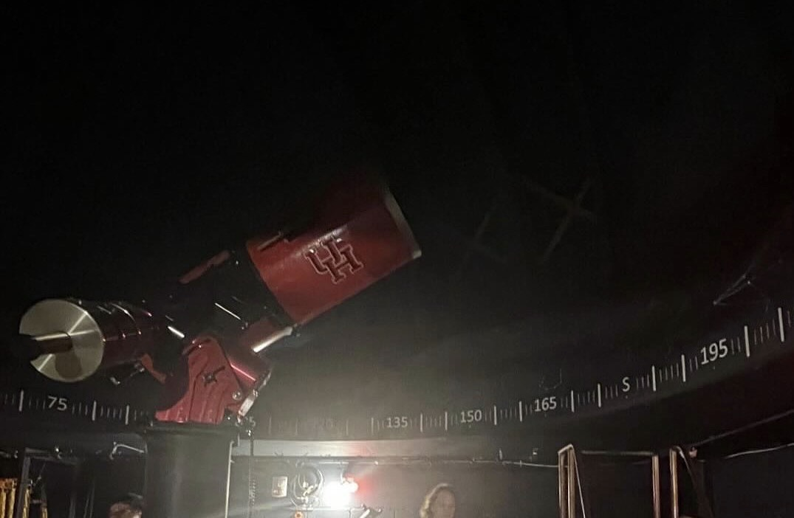
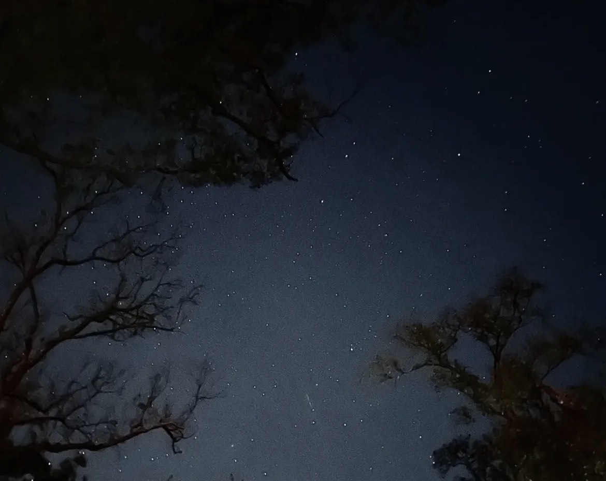
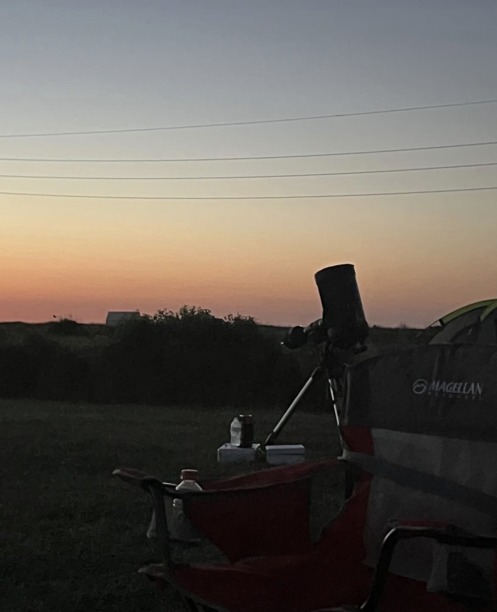
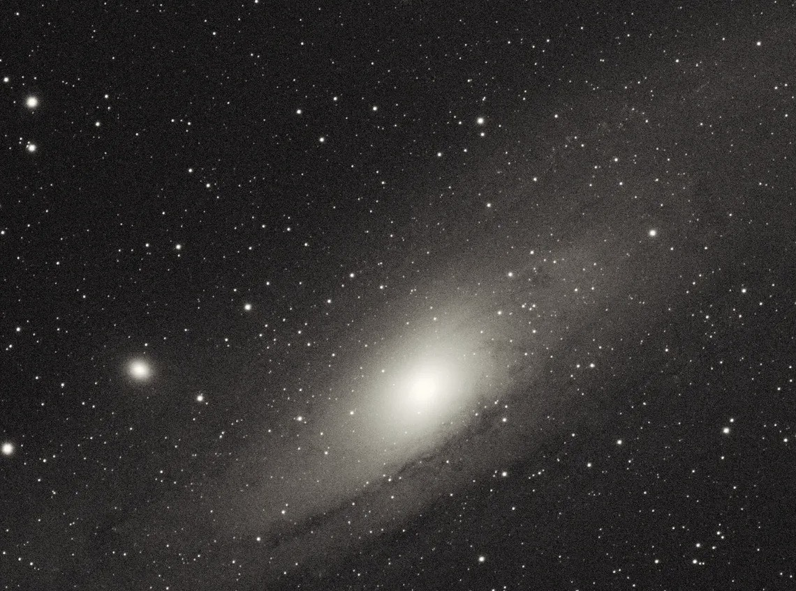

Serving as Historian for the University of Houston Astronomy Club, documenting events, camping trips, outreach activities, and club milestones through photography while helping preserve and shape the organization's culture and growth.



